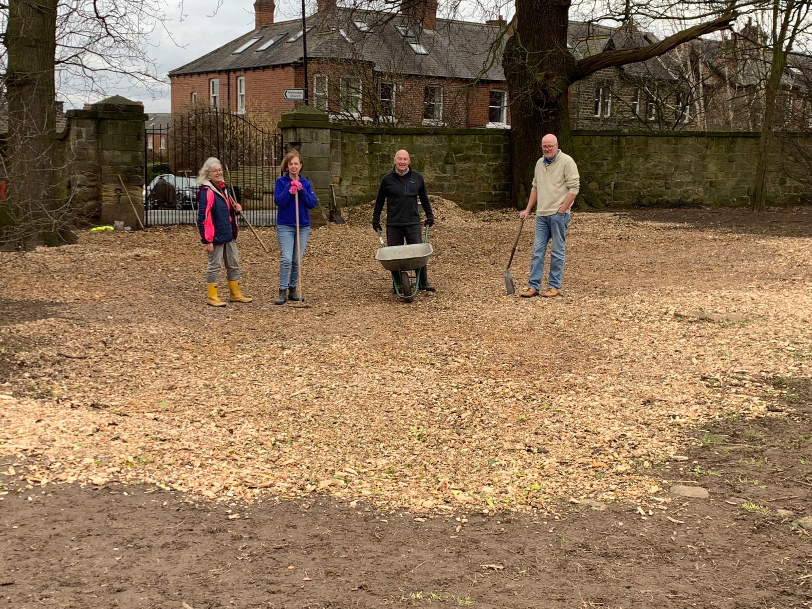
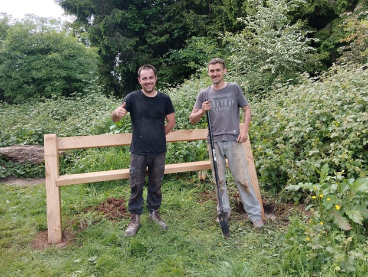
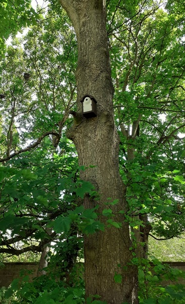
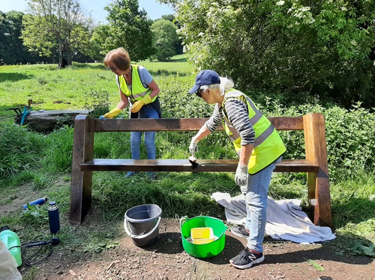
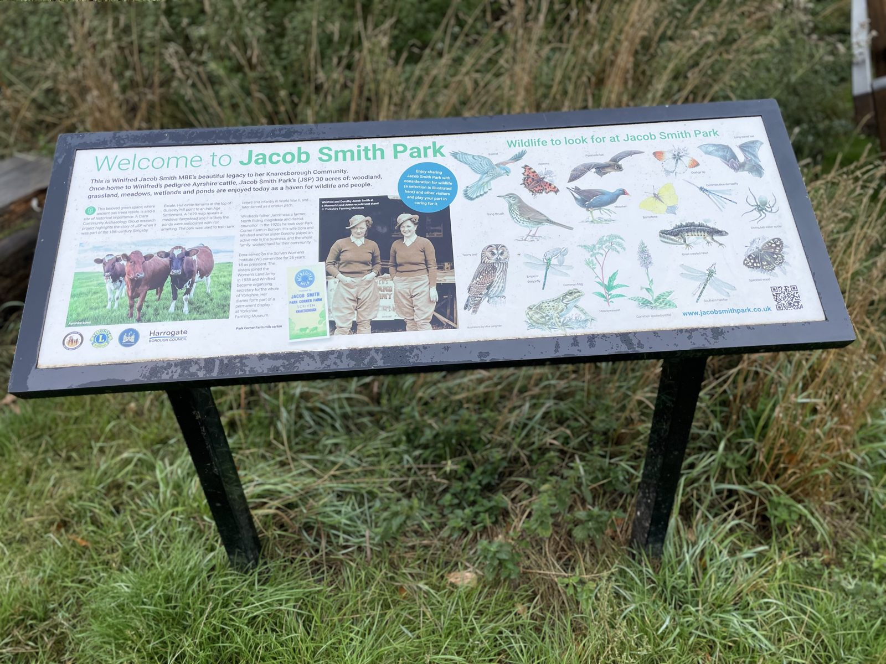
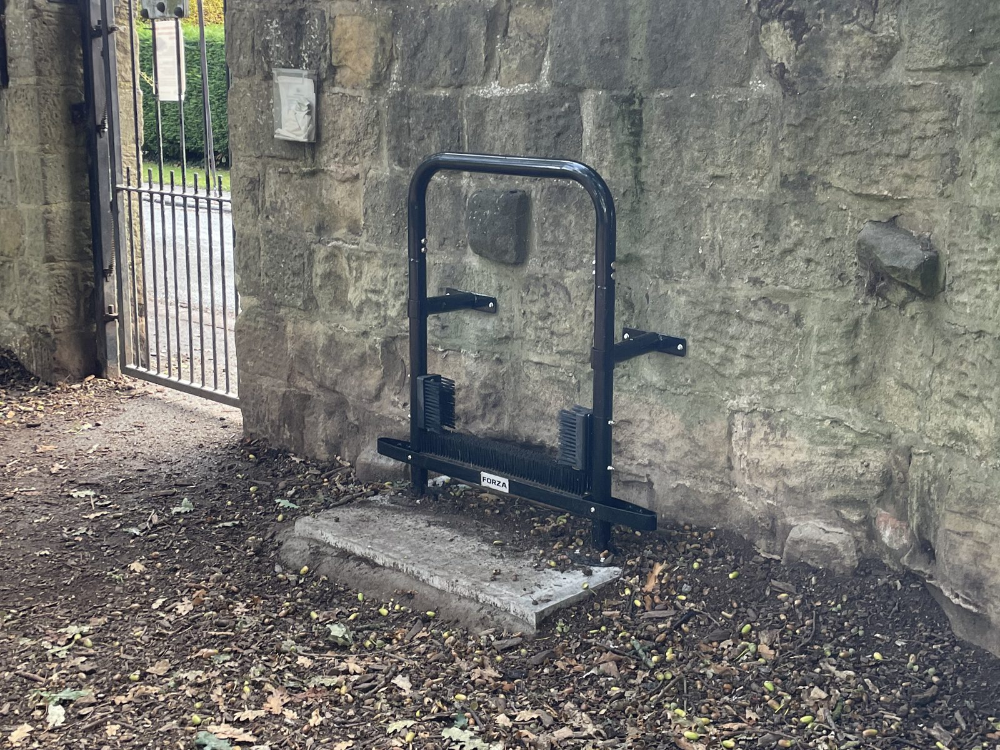

What do Friends of JSP do?

The Friends of Jacob Smith Park (FoJSP) is a community interest group formed in 2008, shortly after JSP opened to the public. We are run by a volunteer committee who provide the link between the local community and North Yorkshire Council (NYC), who owns and maintains the park.
Represent the interests of the local community and park users in relation to the park.
Agree priorities with NYC and help to deliver the yearly plan for the park.
Fundraising for agreed improvements to the park outside the council's responsibility.
Arrange volunteering events to carry out agreed enhancements.
Hold public meetings twice a year to share progress and gather views on upcoming priorities.
Recent projects
A selection of the projects we've delivered in the park over the years.





Benches
Raised funds and managed the purchase and installation of seven new oak benches across the park.
Bat & bird boxes
Installed a variety of boxes to encourage owls, robins, nuthatches, bats and many more species to nest.
Himalayan balsam control
Over three years, reduced this invasive species to a manageable level, allowing native plants to recover.
Information board
Installed a board near the entrance covering the park's history and a summary of its habitats and wildlife.
Trees
Planted over 300 trees to create extra woodland habitat throughout the park.
Wildflowers
Cleared dozens of areas and planted hundreds of native wildflowers to support insects and other wildlife.
Shrubs
Planted over 200 shrubs providing cover, nectar, fruit for birds and colour across the seasons.
Talks
Arranged expert talks on wildflower meadows, bees, astronomy, dog training and the benefits of green spaces.
Ponds
Worked with Yorkshire Wildlife Trust to renovate two dried-out wildlife ponds and restore habitat for great crested newts.
Fences
Supported the replacement of broken fences around veteran trees to protect their root systems.
FoJSP committee
The FoJSP committee is a relaxed and friendly group which meets a few times a year to agree priorities and manage the enhancements to the park.
- Phil Millward, Chair
- Karen Millward, Secretary
- Carole Dobson, Treasurer
- Julia Hatch, Committee member
- Shirelle Hawkins, Committee member (NYC)
- Hilary Hopkinson, Committee member
- Ian Brown, Committee member
- Phil Oldfield, Committee member
How can you help?
There are several ways to get involved and support the park. Every contribution makes a difference.